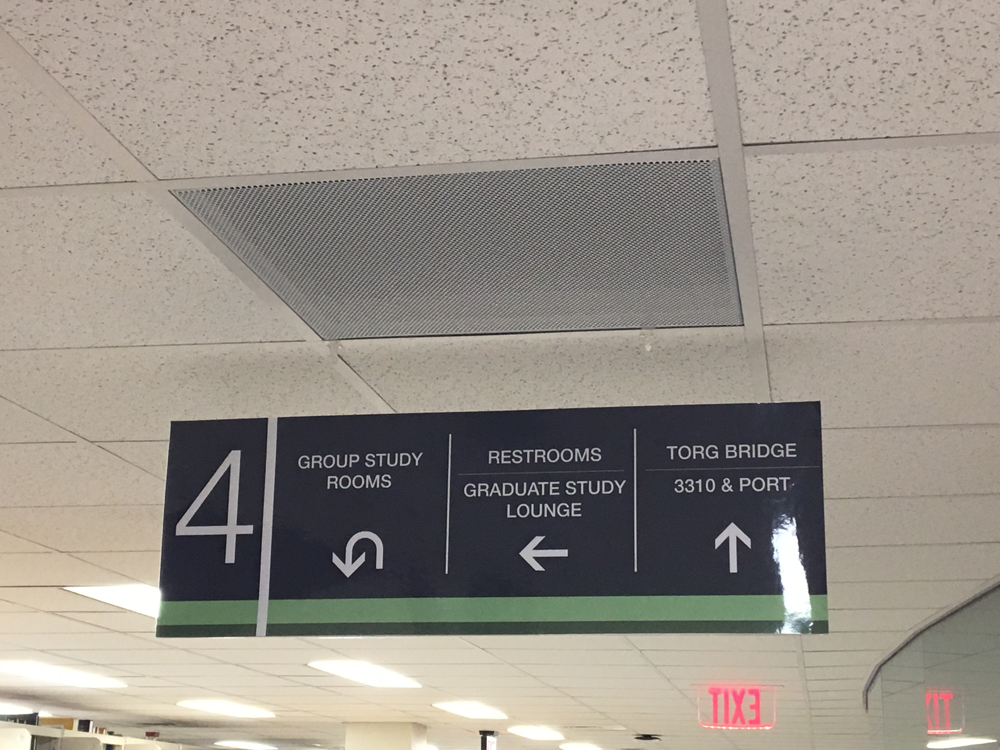
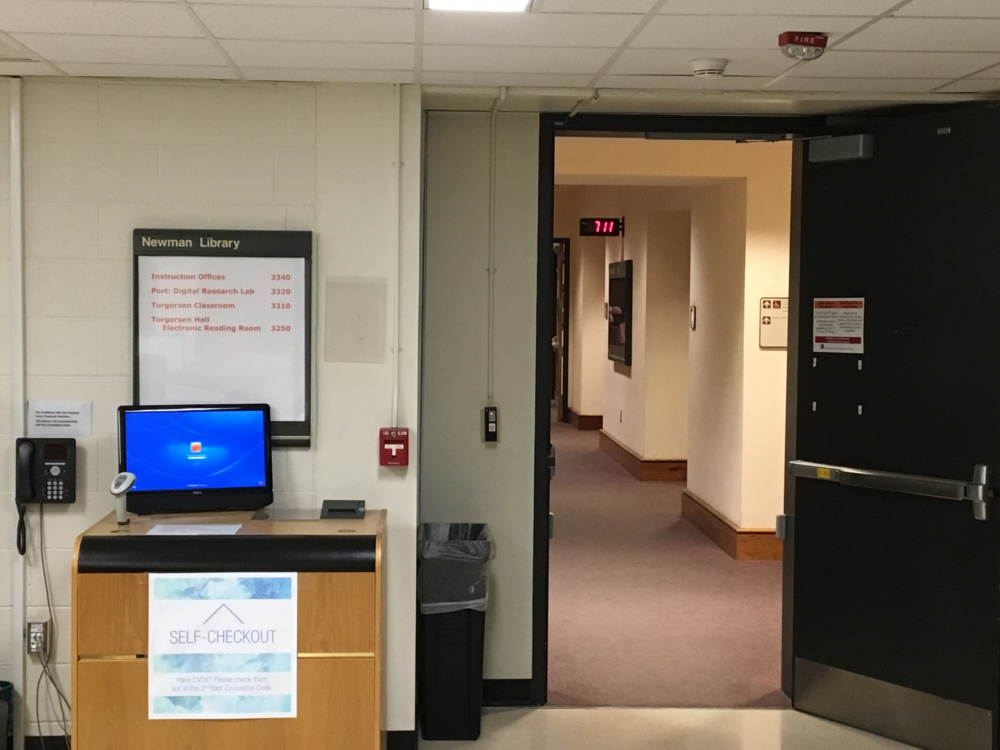
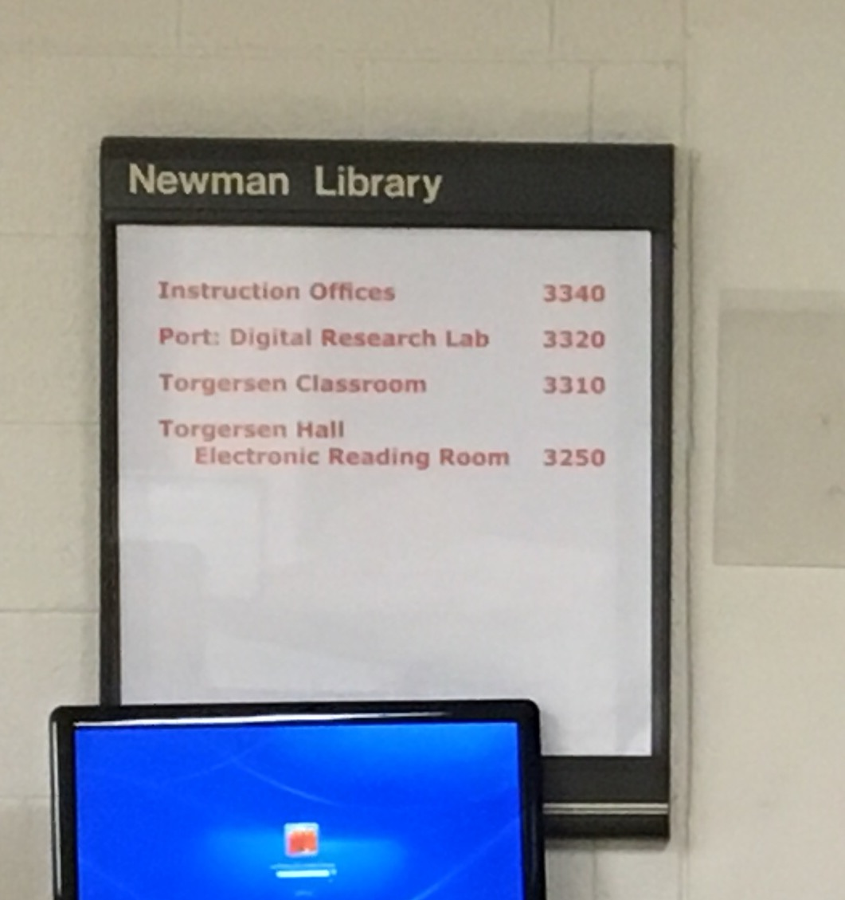

Travel to the fourth floor and look for theses signs. They are hanging from the ceiling everywhere and will guide you on your way.
Once you have followed these signs, you will come to a doorway that leads to Torg
Please notice the white sign to the left of the doorway. This sign will tell you the room number of Port and will also let you know you are going in the right direction.
This is the outside of the Port room. You will probably notice that the opening is not very inviting and there is card reader.